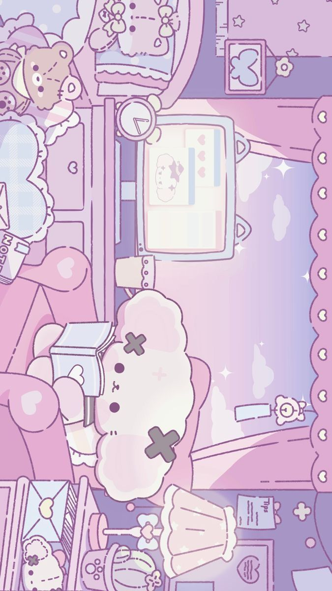

ぬいぐるみ✩◝(◍⌣̎◍)◜✩𝓢𝓽𝔂𝓵𝓮

Le style Sanriocore est une esthétique très mignonne (kawaii) inspirée par l'univers
de Sanrio, la célèbre
marque japonaise qui a créé des personnages comme Hello Kitty, My Melody, Cinnamoroll,
Kuromi, etc.
C'est un style qui mélange nostalgie, douceur et enfance, avec une touche parfois un peu surréaliste.